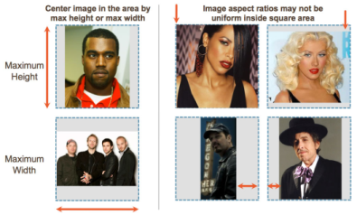

Gracenote images – in the form of cover art, artist images and more – are integral features in many online music services, as well as home, automotive and mobile entertainment devices. Gracenote maintains a comprehensive database of images in dimensions to accommodate all popular applications, including a growing catalog of high-resolution (HD) images.
Gracenote carefully curates images to ensure application and device developers are provided with consistently formatted, high quality images – helping streamline integration and optimize the end-user experience. This topic describes concepts and guidelines for Gracenote images including changes to and support for existing image specifications.
Gracenote images are designed to fi
t within squares as defined by the available image dimensions. This allows developers to present images in a fixed area within application or device user interfaces. Gracenote recommends applications center images horizontally and vertically within the predefined square dimensions, and that the square be transparent such that the background shows through. This results in a consistent presentation despite variation in the image dimensions. To ensure optimum image quality for end-users, Gracenote recommends that applications use Gracenote images in their provided pixel dimensions without stretching or resizing.
Gracenote resizes images based on the following guidelines:
Following these guidelines, all resized images will remain as rectangles retaining the same proportions as the original source images. Resized images will fit into squares defined by the available dimensions, but are not themselves necessarily square images.

For Tribune Media Services (TMS) video images only, Gracenote will upsize images from their native size (288 x 432) to the closest legacy video size (300 x 450) – adhering to the fit-to-square rule for the 450 x 450 image size. Native TMS images are significantly closer to 300 x 450. In certain situations, downsizing TMS images to the next lowest legacy video size (160 x 240) can result in significant quality degradation when such downsized images are later displayed in applications or devices.